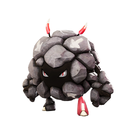
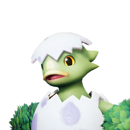

애니모 숨겨진 퀘스트 4종 정리, 수수께끼의 존재부터 슈라라 그림 정답까지
애니모 하다가 지도에도, 퀘스트 목록에도 안 뜨는 상황을 만나신 분 계실 것 같아요. 저는 이번엔 인게임을 직접 캡처하는 대신, 디시·Game8·스팀 가이드·레딧을 한참 뒤져가면서 지도에도 목록에도 안 뜨는 숨은 퀘스트 4종을 정리해봤는데요, 사진으로 보여드리는 글이 아니라 출처를 하나하나 대조해서 정리한 글이라는 점 먼저 밝혀둘게요.
네 가지 다 '안 보이는 이유'가 조금씩 달라요. 퀘스트 아이템 탭 안에 숨어 있거나, 목록 자체에 아예 없거나, 인게임 길찾기가 실제 위치랑 어긋나서 헤매게 만들거나 하는 식이에요. 하나씩 짚어볼게요.
아스트라 「수수께끼의 존재」, 복셀 블록부터 챙겨야 해요
아스트라 지역에서 진행되는 「수수께끼의 존재」는 가방의 퀘스트 아이템 탭에서 개수를 확인하며 블록을 모으는 방식이에요. 퀘스트 목록에 따로 안 뜨다 보니 존재 자체를 모르고 지나가는 경우가 많다고 해요.
그런데 총 개수가 출처마다 다르게 적혀 있어요.🔍 개수 충돌 디시 정리글(no=3138·추천 20·댓글 25)·theclick.gg(09-18) 두 곳은 9개로 세고, Game8(09-19 갱신)은 8곳(슬라이딩 퍼즐 2곳 포함)으로 적어요. 어느 쪽이 맞다고 단정하기보다는, 출처마다 세는 기준이 조금씩 다르다 정도로 알아두시는 게 안전할 것 같습니다.
디시 기준 위치는 이렇게 흩어져 있어요.
- 광고판 수리 3곳(이홈 아파트·챔피언 컵·애니모 콜라보)
- 번호 발판 순서대로 밟기 2곳
- 슈퍼 크레인 옥상 그네
- 큰길 시소
- 「이상한 섬광」 구경꾼 NPC 미션
- 북쪽 정원 주디의 서브 미션
스팀 토론에서도 「발판 1~8·9, 그네, 시소, 픽셀 모양 애니모」로 디시랑 같은 결로 적혀 있어서, 이 목록 자체의 신뢰도는 낮지 않은 것 같아요. 다만 보상은 Game8 한 곳에서만 확인돼서 아직 단정하긴 이르고요, 진행이 안 된다는 버그 제보도 네이버 라운지(09-18)에 올라와 있어서 막히면 버그 가능성도 염두에 두시면 좋겠어요.
참고로 복셀 코인은 이 퀘스트랑 별개 재화예요. 아스트라 상점가에서 스킨을 사는 데 쓰는데, 주 1,000개 제한이 있다고 디시·루리웹에 적혀 있어요.🔍 커뮤니티 출처
「황금 투구의 비밀」은 왜 목록에도 안 뜰까요
이 이벤트는 퀘스트 목록·지도 표시 없이 딱 한 번만 진행되는 숨은 이벤트예요(Game8 영문판, 09-19 갱신). 붉은바위 고지에서 투구누니 무리가 황금 투구를 둘러싸고 있는 장면부터 시작돼요.

공식 위키 도감의 투구누니(NO.061)예요 — 황금 투구를 둘러싸고 있는 게 바로 이 애들이에요.
공략은 이래요. 은신 탐사 스킬을 가진 애니모로 트와인해서 들키지 않고 접근하면, 황금 투구가 산림 형태 투구누니로 변하고, 그걸 포획하면 이벤트가 끝나요. 이후엔 그 지역에 산림 형태가 야생으로도 나온다고 해요(Game8). 디시(no=3125, 조회 823)도 「은신으로 훔치는 퀘스트」로 같은 결을 적고 있어서 방식 자체는 믿을 만해 보여요.
은신 탐사 스킬을 가진 애니모는 싹뚜기·서걱리퍼·볼트맨티스(공식 위키에는 썬더스퀵이라는 이름으로 실려 있어요) 세 종이 있습니다. 산림 형태 투구누니·누니용사·아머누니가 공식 위키에 실려 있고, 출현 지역도 붉은바위 고지로 확인돼요.
다만 정확한 위치는 아직 확실하지 않아요.🔍 영문판·일본판 차이 Game8 영문판은 위 내용대로 적었는데, 일본판은 지역이 미이로 숲 쪽으로 다르고 은신 스킬도 안 쓰는 다른 방식(「인력 조작」으로 끌어낸대요)이라, 이 글은 영문판 기준으로 정리했어요. 참고로 산림 형태 투구누니 같은 형태·진화 조건은 따로 총정리해뒀으니 궁금하시면 그 글도 한번 보시면 좋을 것 같아요.
슈라라 그림 맞히기, 1편 정답은 이 넷이에요
1편 정답은 둔둔달 → 록볼볼 → 라라에그 → 싹크랩 순서예요. 디시(no=4086)·스팀 가이드·레딧, 세 곳이 전부 같은 순서로 적고 있어서 이 글에서 가장 확실한 정보라고 봐도 될 것 같아요.
1번째 정답 둔둔달(NO.052)이에요.

2번째 정답 록볼볼(NO.058)이에요.

3번째 정답 라라에그(NO.036)예요.
4번째 정답 싹크랩(NO.023)이에요. 넷 다 순서대로 데려가시면 됩니다.
이 미니게임도 목록엔 안 뜨고, 그림을 하나씩 순서대로 보여주면서 앞 정답을 맞혀야 다음 그림이 나오는 방식이라(Game8) 순서를 꼭 지켜야 해요. 그냥 꺼내 놓기만 해선 인식이 안 되고 직접 데려가야 해요. 형태는 상관없다고 하고요(디시). 맞는 애니모를 보여주면 대화 없이 자동으로 다음 단계로 넘어간다고 적어둔 곳도 있어요(레딧).
2편(영문 「Architecture and Models」) 정답은 스타라미·뭉게양·갸면뇽·샹들라젤리인데, 이건 스팀 가이드 한 곳에서만 확인돼서 1편만큼 확신하긴 어려워요.🔍 단일 출처 새로 나온 힌트 일부는 커뮤니티도 아직 못 푼 상태라고 하니, 정답이 더 굳으면 다시 정리해볼게요.
안개숲 「약속의 맹세」, 덩굴핵부터 막혀요
안개숲 「약속의 맹세」는 덩굴핵 3개를 전부 없애야 다음으로 넘어가는데, 이 셋은 한 곳이 아니라 동부 폐허·서부 늪지·북부 동굴 세 지역에 흩어져 있어요(Game8 워크스루). 동부 폐허 쪽은🔍 디시 글이 세 곳 중 어디인지까지 적어두진 않았어요 건물 지붕 아래 뚫린 방으로 들어가 꽃과 상호작용하는 방식인데(디시 no=2777), 같은 위치 질문이 3일에 걸쳐 재게시될 만큼(디시 4건) 막히는 자리더라고요.
진짜 이유는 따로 있었어요. 그중 북부 동굴 쪽은 인게임 길찾기 표시가 실제 위치랑 어긋나 있었던 건데, 팬 오버레이 개발자가 09-20에 위치를 수정했다고 공지했어요(디시 no=5292). 길찾기만 믿고 따라가면 헤맬 수 있으니 참고하시면 좋겠어요.
이 여정을 다 끝내면 스팀 업적 「Trail of the Wind」(세 여정 Binding Oath·Stars and the Knight·Warrior 완료 조건)가 뜨는데, 달성률이 4.3%(2026년 9월 20일 기준)밖에 안 될 정도로 손댄 사람이 적어요. 해외 공략에서는 각 여정이 보스 3종(굴파미·나이트스타·갸갑파이어)의 선행 조건이라고 설명하고요(Game8·aniimotools 둘 다 같은 결). 보스는 해금 후 주 1회 리셋되고 도전 1회에 Primegy 50개가 드는데(aniimotools), 포획이 되는지까지는 아직 확인 못 했어요.
아직 확인 못 한 부분도 있어요.🔍 여정 한국어 명칭 미확인 나머지 두 여정(Stars and the Knight·Warrior)의 한국어 제목과, 「약속의 맹세」가 영문 Binding Oath와 같은 여정인지는 확인하지 못했어요. 다만 「투사」(Warrior)는 예전에 헬울프 진화 글에서 이미 쓴 한국어 여정명이라, 아마 이어지는 이름일 가능성은 있어 보여요.
네 가지, 한눈에 정리하면
| 퀘스트 | 지역 | 핵심 조건 | 확실한 정도 |
|---|---|---|---|
| 수수께끼의 존재 | 아스트라 | 복셀 블록 모으기(개수 8~9개, 출처마다 다름) | 🔵다수 일치 |
| 황금 투구의 비밀 | 붉은바위 고지 | 은신 스킬로 접근 → 포획 | 🔵다수 일치(정확한 위치는 🔴미확인) |
| 슈라라 그림 맞히기(1편) | 아스트라 | 둔둔달·록볼볼·라라에그·싹크랩 데려가기 | 🔵다수 일치 |
| 약속의 맹세 | 안개숲 | 덩굴핵 3개 제거 | 🔵다수 일치(길찾기 오차 주의) |
정리해보니 가장 확실한 건 슈라라 1편 정답이고, 아직 출처마다 갈리거나 확인이 덜 된 건 복셀 블록 개수, 황금 투구 정확한 위치, 복셀 코인·보상 세부 내역, 나머지 두 여정 한국어 이름 이렇게 네 가지 항목으로 정리할 수 있을 것 같아요.
애니모 숨은 퀘스트 자주 묻는 질문
Q. 이 정리는 언제 기준인가요?
2026년 9월 20일, 정식 출시(9월 16일) 나흘 뒤 기준으로 커뮤니티·공략 사이트를 대조해서 정리한 내용이에요. 패치가 나오면 위치나 개수가 바뀔 수 있으니 참고해주세요.
Q. 출처마다 다르게 적힌 정보(복셀 개수·황금 투구 위치)는 어느 쪽을 믿어야 하나요?
위에 적어둔 것처럼 이 글은 양쪽을 다 적어뒀고요, 실제로 진행하시면서 본인 화면에 맞는 쪽을 확인하시는 걸 추천드려요.
애니모 숨은 퀘스트 정리
한마디로 아스트라 복셀 블록, 붉은바위 고지 황금 투구, 슈라라 그림 맞히기, 안개숲 덩굴핵 이렇게 네 가지가 지도·목록에 안 뜨는 숨은 퀘스트예요. 저도 직접 캡처는 못 했지만, 확실한 것과 아직 갈리는 걸 나눠서 정리해뒀으니 헤매실 때 이 글이 지도 대신이 되면 좋겠어요.
✔ 애니모 같이 보기 좋은 내용
· 애니모 전투 티어표 정리, 1티어 애니모 추천까지 짚어봤어요
· 애니모 캠핑카 생활 티어표 추천, 홈 능력 13종 정리
· 애니모 용어 총정리, 천휘 애니모 획득부터 희귀도 평가 차이부터 선천 후천 어빌리티, 옵시디언까지